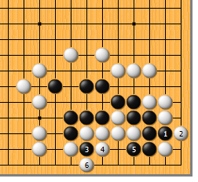
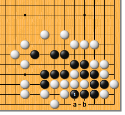
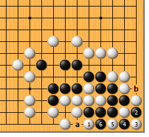
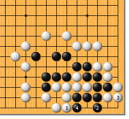
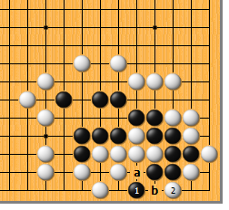
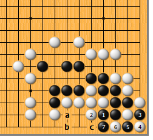
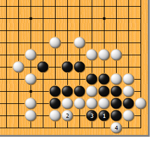

|  |  | |
| 图1 黑1冲，白2挡，当然。黑3断，好手筋！白4抱吃，黑5拐，是要点。白6提，尽量消除味道，是最强的应手。接下来…… | 图2 黑1挤，好手！对左右白棋来讲，黑下a位或b位都是先手，难以两全。
| |
|
 |
 | |
图3 白1如扳，黑2、4连扑后再于6位挡。而后，白a粘则右边成劫；白b粘则左边成劫，左右见合。
| 图4 白1粘妄想消劫，结果只有更坏。黑2立，绝对先手，白为防扑只好3位粘，黑4挡，反而成净活。
| |
|
 |
 | |
图5 黑1不下a位而单尖，只瞄准一边的弱点，不会成功。白2扳，黑没有眼位。当然，这种形状b位挡也于事无补。 | 图6 黑1如不于a位断，单拐，结果如何？白2挡，不是好手。黑3、5连扑，再于7位拐下。要么在右边开劫，要么黑a、白b、黑c吃接不归，出棋。
| |
|  | 您的高见 | |
图7 黑1拐时，白2粘，这才是一手补净的好手！黑3爬，白4扳，右边没有接不归，黑必死。 |